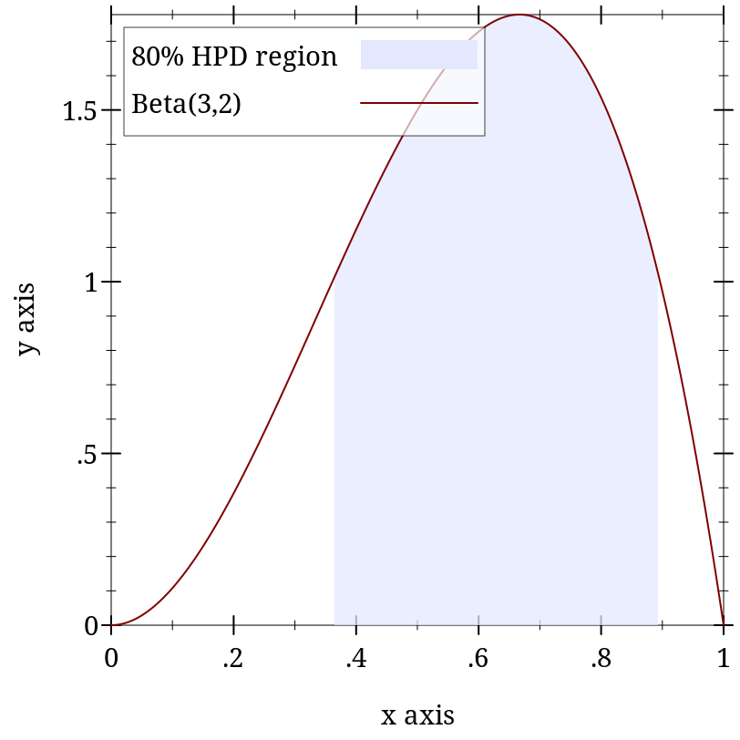

9.2 Distribution Types and Operations
语法
(PDF In)
语法
(Sample Out)
语法
(CDF In)
语法
(Inverse-CDF Out)
struct
(struct distribution (pdf sample))
pdf : (PDF In) sample : (Sample Out)
> (distribution? (discrete-dist '(a b c))) #t
> (distribution? (normal-dist)) #t
> ((distribution-pdf (normal-dist)) 0) 0.39894228040143265
> ((distribution-sample (normal-dist))) -0.2997363181269561
struct
(struct ordered-dist distribution (cdf inv-cdf min max median))
cdf : (CDF In) inv-cdf : (Inverse-CDF Out) min : Out max : Out median : (Promise Out)
Similarly to distribution, the In type parameter is the data type an ordered distribution accepts as arguments to its pdf, and the Out type parameter is the data type an ordered distribution returns as random samples. Additionally, its cdf accepts values of type In, and its inverse cdf returns values of type Out.
> (ordered-dist? (discrete-dist '(a b c))) #f
> (ordered-dist? (normal-dist)) #t
The median is stored in an ordered-dist to allow interval probabilities to be computed accurately. For example, for d = (normal-dist), whose median is 0.0, (real-dist-prob d -2.0 -1.0) is computed using lower-tail probabilities, and (real-dist-prob d 1.0 2.0) is computed using upper-tail probabilities.
> (pdf (discrete-dist '(a b c) '(1 2 3)) 'a) 0.16666666666666666
> (pdf (discrete-dist '(a b c) '(1 2 3)) 'a #t) -1.791759469228055
> (sample (exponential-dist)) 1.7941305499507705
> (sample (exponential-dist) 3) '(2.485819050535842 0.18993757558771618 0.37020081175154457)
函数
d : (ordered-dist In Out) v : In log? : Any = #f 1-p? : Any = #f
When log? is #f, cdf returns a probability; otherwise, it returns a log probability.
When 1-p? is #f, cdf returns a lower-tail probability or log probability (depending on log?); otherwise, it returns an upper-tail probability or log-probability.
函数
(inv-cdf d p [log? 1-p?]) → Out
d : (ordered-dist In Out) p : Real log? : Any = #f 1-p? : Any = #f
When log? is #f, inv-cdf interprets p as a probability; otherwise, it interprets p as a log probability.
When 1-p? is #f, inv-cdf interprets p as a lower-tail probability or log probability (depending on log?); otherwise, it interprets p as an upper-tail probability or log probability.
函数
(real-dist-prob d a b [log? 1-p?]) → Flonum
d : Real-Dist a : Real b : Real log? : Any = #f 1-p? : Any = #f
函数
(real-dist-hpd-interval d p) → (Values Flonum Flonum)
d : Real-Dist p : Real
> (define d (beta-dist 3 2)) > (define-values (x0 x1) (real-dist-hpd-interval d 0.8))
> (plot (list (function-interval (λ (x) 0) (distribution-pdf d) x0 x1 #:line1-style 'transparent #:line2-style 'transparent #:label "80% HPD region") (function (distribution-pdf d) 0 1 #:label "Beta(3,2)"))) 